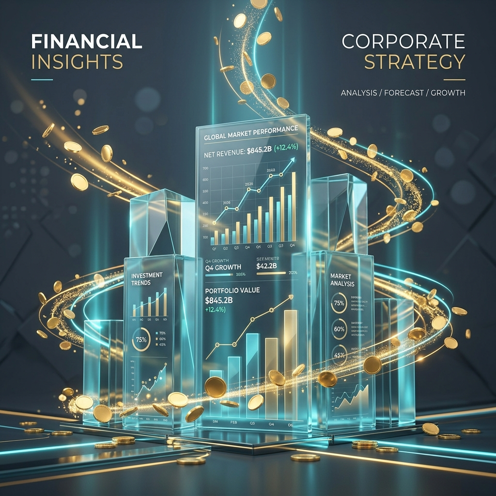

From Raw Data to Profit
Consultant Advanced
Analytics
Stop letting your clients' ad budgets go up in smoke. I help marketing agencies guarantee profitable growth through clean data, predictive modeling, and deep emotional intelligence.
The Mind Behind The Data
I am a Consultant Advanced Analytics. I am American, currently living in France, and fully bilingual (English/French). My primary mission is to help marketing agencies prevent the burning of their clients' advertising budgets and optimize their investments through modeled predictions and sentiment analysis.
My motivation for this work is deeply personal. My father was a successful entrepreneur, and upon his passing, he lost everything due to bad business decisions. That experience fundamentally shaped my drive: I want to help businesses avoid losing money because of poor decision-making.
Before transitioning to data, I was an acting coach for over 20 years, specializing in the Meisner technique. This background gave me a unique superpower: Emotional Intelligence. I don't just look at numbers; I understand the human behavior and psychology driving those numbers. My philosophy is that AI will never replace the emotional intelligence of a human being. AI hallucinates and makes errors; it requires human oversight, empathy, and intuition to ensure the insights are grounded in reality. That is why I am a defender of the human before the AI.
Furthermore, my past background as a jurist instilled in me a rigorous methodology and a deep understanding of the legal implications of data manipulation, ensuring absolute compliance.
Finally, I work with a long-term vision to ensure absolute data reliability. Beyond performing "deep dives" to cut unprofitable ads, I conduct inventory and financial analyses (such as evaluating the Working Capital Requirement - BFR) to ensure that scaling advertising campaigns won't cause cash flow issues for the client. Not only do I help clients optimize their investments, but I also strengthen the marketing agency's brand image and trust with their clients.
Tech Stack
Certifications
- Google: Data Analytics Professional
- Google: Analytics Certificate 2024
- AnalystBuilder: MySQL & Tableau 2025
My Projects
Case Studies
Negative ROAS Analysis
Understanding why increasing ad spending was not translating into revenue. Fixing attribution gaps and strategic timing.
Targeted Advertising Growth
Identifying high-potential segments to optimize campaigns. Using R to build predictive models for Electronics vs Home categories.

Apple: Cash Management
Assessment of point-in-time cash position and strategic flexibility. Evaluating Working Capital Requirement and liquidity.
Back Pain Sentiment Analysis
Transforming the voice of the customer into high-performance advertising by analyzing Reddit conversations using R.
SEO Traffic Drop Diagnosis
Investigating a sudden drop in organic traffic on mobile devices using linear regression and Core Web Vitals correlations.
Expatriation Dashboard
Building an interactive Google Sheets dashboard with live API data to simulate an expat move and track financial independence.